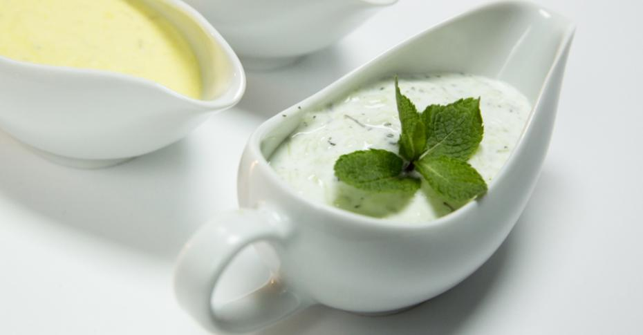

Йогуртовый соус с огурцом и чесноком (цацики)

Ингредиенты:
Греческий йогурт (термостатный) - 100 гр
Огурец - 1-2 шт
Мята сушенная
Зубчик чеснока - 1-2 шт
Соль - 2 щепотки
Приготовление:
1. Очищаем 2 средних огурца от кожицы и измельчаем на мелкой терке. Помещаем огурец в сито и посыпаем 2 щепотками соли, перемешиваем и придавливаем огурец лопаткой, чтобы из него вышел сок.
2. Натираем чеснок.
3. Отправляем в миску 4 ст. л. термостатного густого йогурта (около 100 грамм), добавляем огуречную массу и перемешиваем. Добавляем сушеную мяту и тщательно перемешиваем.